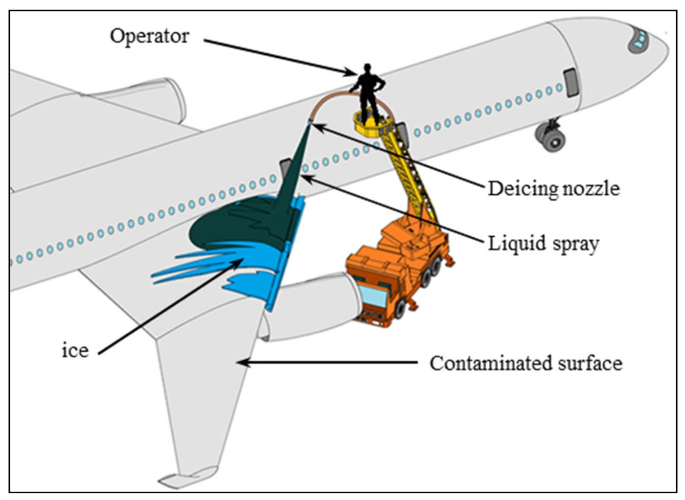

Module 2 · De-icing and Anti-icing
Lesson 09: Preparing the Aircraft and Protecting Sensitive Areas
Lesson narration
Checking for narration…
Learning objectives
- Configure the aircraft for de-icing according to the AFM/FCOM.
- Identify areas that must not be sprayed directly.
- Describe good application practice from the crew's point of view.

Typical aircraft configuration for treatment
Each aircraft type has a de-icing configuration in the FCOM or the company manuals. Typical items are:
- Parking brake set (or brakes held as the pad procedure requires) and the aircraft stationary;
- Engines shut down or at idle, as the AFM and the facility procedure require; APU running if required;
- Air conditioning packs and APU bleed off (or as specified) to prevent fluid fumes entering the cabin and flight deck;
- Flaps and slats retracted, unless the AFM requires another setting;
- Flight controls neutral, and stabiliser trim as specified;
- Doors and windows closed;
- Probe/window heat and other systems as the FCOM specifies.
Confirm the configuration to the de-icing crew before spraying begins (Lesson 10).
Areas that must not be sprayed directly
| Area | Why |
|---|---|
| Pitot probes, static ports, AoA vanes, TAT probes, ice detectors | Fluid residue causes erroneous air data and warnings |
| Engine inlets, exhausts, thrust reversers; APU inlet and exhaust | Fluid ingestion causes fumes and smoke in the cabin, and possible engine damage |
| Cockpit and cabin windows | Thickened fluid smears and reduces visibility |
| Brakes and wheels | Fluid on hot brakes can catch fire or produce smoke |
| Landing gear bays, electrical connectors and antennas | Contamination of components and connectors |
| Control surface gaps and balance bays (high-pressure spray) | Forces contamination and fluid into gaps, where residue can collect and freeze |
Good application practice
De-icing crews follow their own procedures (SAE AS6285). As a crew member it helps to know what "good" looks like:
- Spraying generally works from the highest point downward and from the leading edge rearward, so that contamination is pushed off the aircraft, not onto clean areas.
- Hot fluid is used close to the surface for de-icing, to transfer heat. Anti-icing fluid is applied as an even, complete layer.
- Both sides of the aircraft are treated in the same way.
- The vertical and horizontal stabilisers, which you cannot see from the flight deck, are treated and checked.
- Treatment of the fuselage depends on the AFM and conditions. On rear-engine aircraft the upper fuselage is a critical surface.
During treatment
Do not change configuration, move control surfaces, change engine power or move the aircraft until the de-icing crew confirms that all personnel and equipment are clear.
Key takeaways
- Configure the aircraft exactly as the FCOM specifies before spraying starts.
- Packs and APU bleed off (or as specified) prevent glycol fumes in the cabin.
- No direct spray on probes, engine and APU inlets, windows, brakes or control surface gaps.
- No movement or configuration change until the de-icing crew confirms all clear.
Knowledge check
Why are the air conditioning packs and APU bleed normally switched off during de-icing?